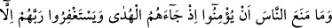
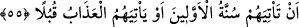

Bize ne bu kıssadan ki öküz geldi merkeb gitti,
Bu vakit azizdir, bu arbededen geri dön, vazgeç.
Akıllı kişiye gereken, kendi nefsiyle uğraşmak ve gösterişi ve cedelleşmeyi terk
etmektir. Çünkü cedelin varacağı yer, başkasını hicvetmek ve darmadağın etmektir. Bu
ise yırtıcı hayvanların özelliklerdendir. Bir hadiste şöyle buyrulmuştur: “Haklı da olsa
tartışmayı terk etmedikçe kişi îmânın hakîkatine eremez.”[192] Şu halde haklı bile olsa
cedelleşmeyi terk etmek gerekir. Bu durumda bir de haksız olduğu halde tartışmayı
sürdürenin hâli nice olur? Allah, bizi ve sizi fazlı ile bu derekeye düşmekten korusun.
Bizi daima hayır söyleyenlerden eylesin. Ağyarın boş sözlerinden yüz çevirmeye
muvaffak kılsın. Nitekim Allah Teâlâ şöyle buyurur: “Boş sözlerle karşılaştıklarında
vakar ile (oradan) geçip giderler” (el-Furkan, 25/72) “kendini bilmez kimseler
onlara laf attığında “Selam!” derler (geçerler)” (el-Furkan, 25/63)
55. Kendilerine hidâyet geldiğinde insanları îman etmekten ve Rablerinden
mağfiret talep etmekten alıkoyan şey, sadece, öncekilerinin başına gelenlerin kendi
başlarına da gelmesini, yahut azâbın göz göre göre kendilerine gelmesini
beklemeleridir!
“Kendilerine hidâyet” Kerim dâvetçi Hz. Muhammed (a.s.) ve doğru yola götüren
yüce Kur’an “geldiği zaman insanları” Mekkelileri Allah’a “îman etmekten ve” şirki
terk etmekten ve türlü türlü günahlarından ötürü “Rablerinden mağfiret talep etmekten
alıkoyan şey, sadece, öncekilerinin başına gelenlerin” yâni önceki ümmetler
hakkındaki Allah’ın sünnet ve âdetinin “kendi başlarına da gelmesini, yahut azâbın
göz göre göre kendilerine gelmesini beklemeleridir!” Geçmiş ümmetler,
peygamberden getirmesini istedikleri mûcize gösterildiği halde, sırf inatları yüzünden
inanmayınca kökleri kazınmıştı. Mekke halkı, sanki başlarına bunun gibi felaketin
gelmesini beklemekte ya da türlü türlü âhiret azâbının açıkça karşılarına getirilmesini
gözetlemektedirler.
Celâleyn’de şöyle der: “Âyette kastedilen onların Bedir günü katledilmeleridir.”
el-Es’iletül-mukhime’de şöyle der: “Âyette Allah îman etmezlerse onlara bu iki
cezadan birini vaad ettiği halde onlardan îman etmeyenlere azâb etmemesi nasıl
oluyor?” diye sorulursa, bunun cevabı şöyledir: “Onları tehdid ettiği bu cezâ, onların
tamamı îman etmedikleri takdirde geçerlidir. Halbuki onların (Mekke halkının) çoğu,
Mekke’nin fethi gününde îman etmişlerdir.”